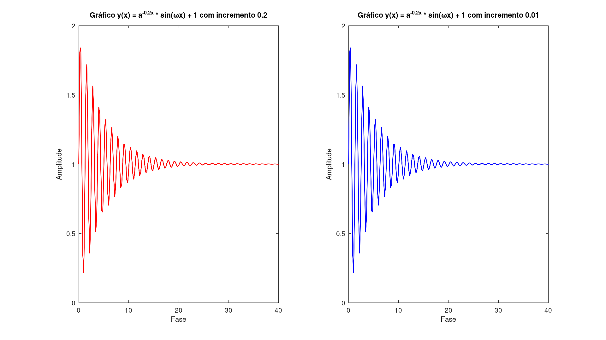
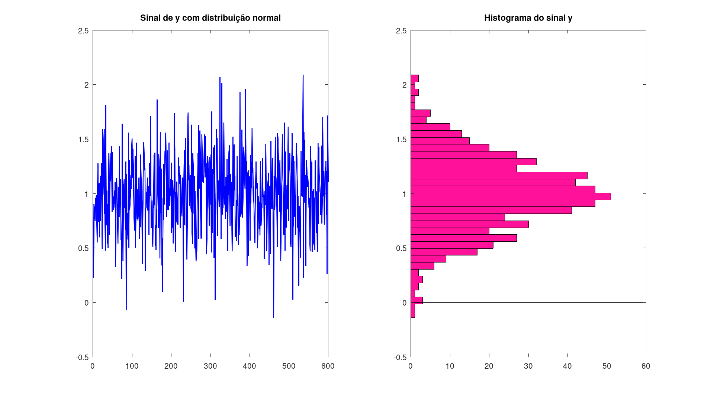
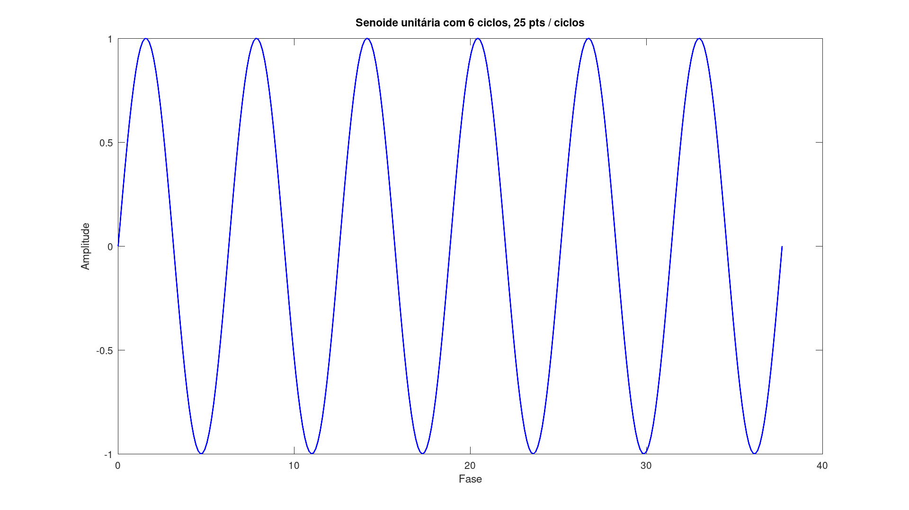
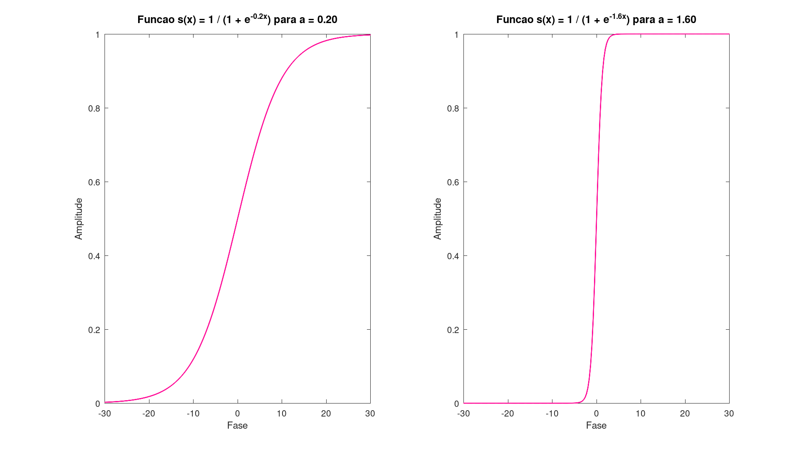
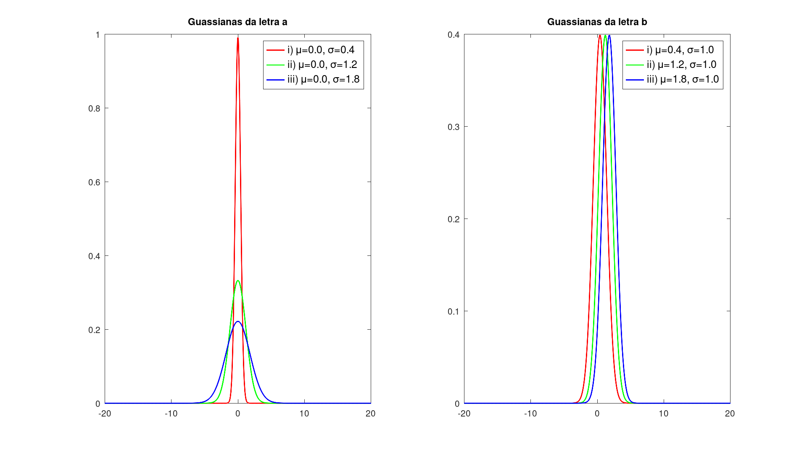
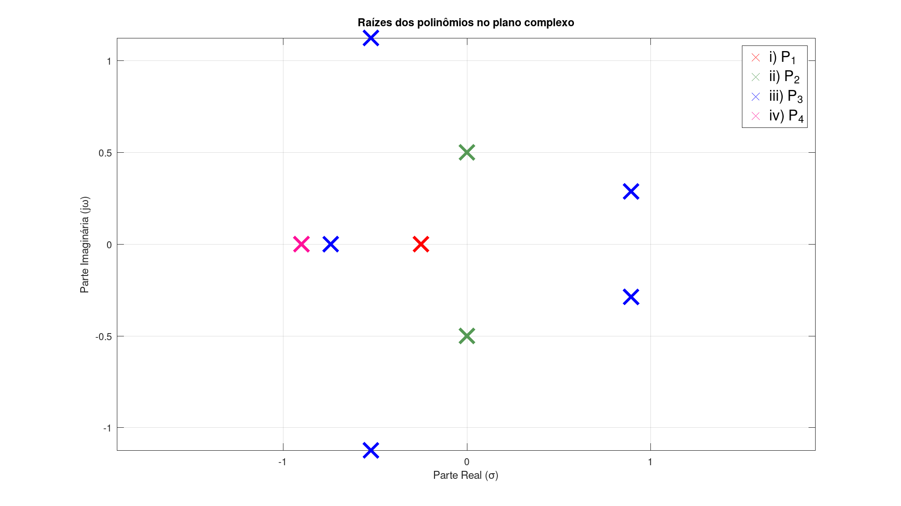
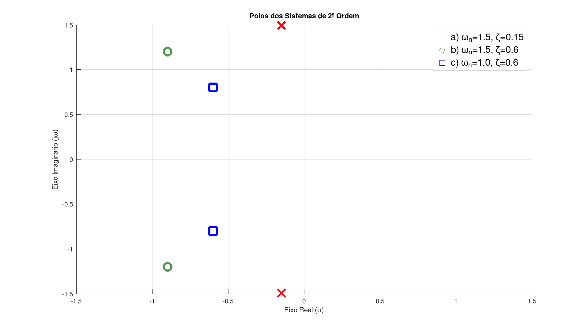
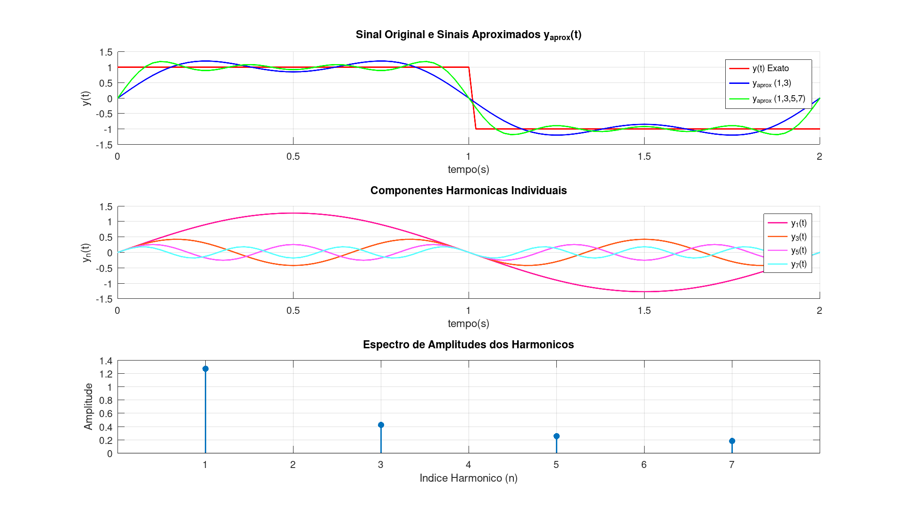

clc; close all; clear; GENERATE_GRAPHS = true; function exportgraph(filename, generate) if !generate return; endif set(gcf, 'PaperUnits', 'inches'); set(gcf, 'PaperSize', [12.8, 7.2]); set(gcf, 'PaperPosition', [0, 0, 12.8, 7.2]); print(gcf, fullfile(pwd, filename), '-dpng', '-r600'); end
disp(repmat('-', 1, 50)); disp(' QUESTÃO 1 '); disp(repmat('-', 1, 50)); disp('Matriz A:'); A = [ [exp(4), log(5)], [sqrt(6), 1 + 5i] ] disp(repmat('-', 1, 50)); disp('Matriz B:'); B = [ [pi, log10(5)], [3j, 1 + 3i] ] disp(repmat('-', 1, 50)); disp('a) A + B'); C = A + B disp('b) A * B'); disp('c) A²'); C = A^2 disp('d) A^(T)'); C = A' disp('e) B^(-1)'); C = inv(B) disp('f) B^(T) * A^(T)'); C = B' * A' disp('g) A² + B² - A * B'); C = A^2 + B^2 - A * B disp('h) Autovalores de A'); C = eig(A) disp('i) A .* B'); C = A .* B disp(repmat('-', 1, 50));
--------------------------------------------------
QUESTÃO 1
--------------------------------------------------
Matriz A:
A =
54.5982 + 0i 1.6094 + 0i
2.4495 + 0i 1.0000 + 5.0000i
--------------------------------------------------
Matriz B:
B =
3.1416 + 0i 0.6990 + 0i
0 + 3.0000i 1.0000 + 3.0000i
--------------------------------------------------
a) A + B
C =
57.7397 + 0i 2.3084 + 0i
2.4495 + 3.0000i 2.0000 + 8.0000i
b) A * B
c) A²
C =
2984.900 + 0i 89.482 + 8.047i
136.187 + 12.247i -20.058 + 10.000i
d) A^(T)
C =
54.5982 - 0i 2.4495 - 0i
1.6094 - 0i 1.0000 - 5.0000i
e) B^(-1)
C =
0.395254 + 0.032987i -0.034544 + 0.080575i
-0.345832 - 0.148265i 0.155262 - 0.362155i
f) B^(T) * A^(T)
C =
171.5251 - 4.8283i -7.3047 - 3.0000i
39.7719 - 4.8283i -12.2879 - 8.0000i
g) A² + B² - A * B
C =
2823.245 - 2.731i 52.605 + 5.316i
134.492 + 21.672i -15.770 + 10.097i
h) Autovalores de A
C =
54.6710 + 0.0068i
0.9272 + 4.9932i
i) A .* B
C =
171.5251 + 0i 1.1249 + 0i
0 + 7.3485i -14.0000 + 8.0000i
--------------------------------------------------
disp(' QUESTÃO 2 '); disp(repmat('-', 1, 50)); disp('Matriz A:'); A = [ [4 3 2], [-6 0 8], [0 -4 -12], ] % 3x3 disp(repmat('-', 1, 50)); disp('Vetor B:'); B = [5; 8; 0] % 3x1 disp('Vetor X:'); X = A\B % 3x1 disp(repmat('-', 1, 50)); disp('valores de x, y, z'); x = X(1) y = X(2) z = X(3)
QUESTÃO 2
--------------------------------------------------
Matriz A:
A =
4 3 2
-6 0 8
0 -4 -12
--------------------------------------------------
Vetor B:
B =
5
8
0
Vetor X:
X =
-9.6000
18.6000
-6.2000
--------------------------------------------------
valores de x, y, z
x = -9.6000
y = 18.600
z = -6.2000
w = 5; % rad/s x1 = 0:0.2:40; x2 = 0:0.01:40; y1 = exp(-0.2 .* x1) .* sin(w .* x1) + 1; y2 = exp(-0.2 .* x2) .* sin(w .* x2) + 1; figure('NumberTitle', 'off', 'Name', 'Questão 3', 'Position', [171, 117, 1024, 576]); subplot(1, 2, 1); plot(x1, y1, 'LineWidth' , 1.5, 'Color', 'red'); title('Gráfico y(x) = a^{-0.2x} * sin(\omegax) + 1 com incremento 0.2'); xlabel('Fase'); ylabel('Amplitude'); subplot(1, 2, 2); plot(x1, y1, 'LineWidth' , 1.5, 'Color', 'blue'); title('Gráfico y(x) = a^{-0.2x} * sin(\omegax) + 1 com incremento 0.01'); xlabel('Fase'); ylabel('Amplitude'); exportgraph('ex2', GENERATE_GRAPHS); disp(repmat('-', 1, 50));
--------------------------------------------------

disp(' QUESTÃO 4 '); disp(repmat('-', 1, 50)); N = 600 y = 1 + 0.35 * randn(1, N); figure('NumberTitle', 'off', 'Name', 'Questão 4', 'Position', [171, 117, 1024, 576]); subplot(1, 2, 1); plot(y, 'LineWidth' , 1.5, 'Color', 'blue'); title('Sinal de y com distribuição normal'); [counts, center] = hist(y, 35); subplot(1, 2, 2); barh(center, counts, 1.0, 'FaceColor', '#ff1199'); title('Histograma do sinal y'); exportgraph('ex4', GENERATE_GRAPHS); disp(repmat('-', 1, 50)); disp('Média: '); mean1 = (1/N) * sum(y) disp('Valor retornado por mean(y): '); mean2 = mean(y(:)) disp('Desvio padrão: '); stantard1 = sqrt((1/(N - 1) * sum((y - mean1).^2))) disp('Valor retornado por std(y): '); stantard2 = std(y) disp('Variância: '); variance1 = (1/(N - 1) * sum((y - mean1).^2)) disp('Valor retornado por var(y): '); variance2 = var(y) disp(repmat('-', 1, 50));
QUESTÃO 4 -------------------------------------------------- N = 600 -------------------------------------------------- Média: mean1 = 0.9943 Valor retornado por mean(y): mean2 = 0.9943 Desvio padrão: stantard1 = 0.3479 Valor retornado por std(y): stantard2 = 0.3479 Variância: variance1 = 0.1210 Valor retornado por var(y): variance2 = 0.1210 --------------------------------------------------

disp(' QUESTÃO 5 '); disp(repmat('-', 1, 50)); x = linspace(0, 12 * pi, 300); y = sin(x); figure('NumberTitle', 'off', 'Name', 'Questão 5', 'Position', [171, 117, 1024, 576]); plot(x, y, 'LineWidth' , 1.5, 'Color', 'blue'); title('Senoide unitária com 6 ciclos, 25 pts / ciclos'); xlabel('Fase'); ylabel('Amplitude'); exportgraph('ex5', GENERATE_GRAPHS); disp('Variância da senoide: '); variance = var(y) disp('Desvio padrão da senoide: '); stantard = std(y) disp(repmat('-', 1, 50));
QUESTÃO 5 -------------------------------------------------- Variância da senoide: variance = 0.5000 Desvio padrão da senoide: stantard = 0.7071 --------------------------------------------------

disp(' QUESTÃO 6 '); disp(repmat('-', 1, 50)); s = @(a, x) 1 ./ (1 + exp(-a .* x)); figure('NumberTitle', 'off', 'Name', 'Questão 6', 'Position', [171, 117, 1024, 576]); x = linspace(-30, 30, 200); %input_a = input('Digite um valor para a: '); %input_b = input('Digite um valor para a: '); disp('Digite um valor para a: 0.2'); input_a = 0.2; disp('Digite um valor para b: 1.6'); input_b = 1.6; func_a = s(input_a, x); func_b = s(input_b, x); subplot(1, 2, 1); plot(x, func_a, 'LineWidth' , 1.5, 'Color', '#ff1199'); title(sprintf('Funcao s(x) = 1 / (1 + e^{-%.1fx}) para a = %.2f', input_a, input_a), 'Interpreter', 'tex', 'FontSize', 12); xlabel('Fase'); ylabel('Amplitude'); disp(repmat('-', 1, 50)); subplot(1, 2, 2); plot(x, func_b, 'LineWidth' , 1.5, 'Color', '#ff1199'); title(sprintf('Funcao s(x) = 1 / (1 + e^{-%.1fx}) para a = %.2f', input_b, input_b), 'Interpreter', 'tex', 'FontSize', 12); xlabel('Fase'); ylabel('Amplitude'); exportgraph('ex6', GENERATE_GRAPHS); disp(repmat('-', 1, 50));
QUESTÃO 6 -------------------------------------------------- Digite um valor para a: 0.2 Digite um valor para b: 1.6 -------------------------------------------------- --------------------------------------------------

disp(' QUESTÃO 7 '); disp(repmat('-', 1, 50)); x = linspace(-20, 20, 400); function y = guassian(x, mu, sigma) y = (1 / (sigma * sqrt(2 * pi))) .* exp(-0.5 * ((x - mu) ./ sigma).^2); end figure('NumberTitle', 'off', 'Name', 'Questão 7', 'Position', [171, 117, 1024, 576]); subplot(1, 2, 1); plot(x, guassian(x, 0, 0.4), 'LineWidth' , 1.5, 'Color', 'red'); hold on plot(x, guassian(x, 0, 1.2), 'LineWidth' , 1.5, 'Color', 'green'); hold on plot(x, guassian(x, 0, 1.8), 'LineWidth' , 1.5, 'Color', 'blue'); hold off title('Guassianas da letra a'); legend('i) \mu=0.0, \sigma=0.4', 'ii) \mu=0.0, \sigma=1.2', 'iii) \mu=0.0, \sigma=1.8', 'FontSize', 12); subplot(1, 2, 2); plot(x, guassian(x, 0.4, 1.0), 'LineWidth' , 1.5, 'Color', 'red'); hold on plot(x, guassian(x, 1.2, 1.0), 'LineWidth' , 1.5, 'Color', 'green'); hold on plot(x, guassian(x, 1.8, 1.0), 'LineWidth' , 1.5, 'Color', 'blue'); hold off title('Guassianas da letra b'); legend('i) \mu=0.4, \sigma=1.0', 'ii) \mu=1.2, \sigma=1.0', 'iii) \mu=1.8, \sigma=1.0', 'FontSize', 12); exportgraph('ex7', GENERATE_GRAPHS); disp(repmat('-', 1, 50));
QUESTÃO 7 -------------------------------------------------- --------------------------------------------------

disp(' QUESTÃO 8 '); disp(repmat('-', 1, 50)); P1 = [4 1]; P2 = [4 0 1]; P3 = [4 0 0 -4*sqrt(2) 0 4]; P4 = conv([1, 0.9], conv([1, 0.9], [1, 0.9])); r1 = roots(P1); r2 = roots(P2); r3 = roots(P3); r4 = roots(P4); figure('NumberTitle', 'off', 'Name', 'Questão 8', 'Position', [171, 117, 1024, 576]); plot(real(r1), imag(r1), 'x', 'MarkerSize', 15, 'LineWidth' , 3.5, 'Color', 'red'); hold on plot(real(r2), imag(r2), 'x', 'MarkerSize', 15, 'LineWidth' , 3.5, 'Color', '#559955'); hold on plot(real(r3), imag(r3), 'x', 'MarkerSize', 15, 'LineWidth' , 3.5, 'Color', 'blue'); hold on plot(real(r4), imag(r4), 'x', 'MarkerSize', 15, 'LineWidth' , 3.5, 'Color', '#ff1199'); hold off title('Raízes dos polinômios no plano complexo'); xlabel('Parte Real (\sigma)', 'FontSize', 11); ylabel('Parte Imaginária (j\omega)', 'FontSize', 11); legend('i) P_1', 'ii) P_2', 'iii) P_3', 'iv) P_4', 'FontSize', 15); grid on; box on; axis equal; exportgraph('ex8', GENERATE_GRAPHS); disp(repmat('-', 1, 50));
QUESTÃO 8 -------------------------------------------------- --------------------------------------------------

disp(' QUESTÃO 9 '); disp(repmat('-', 1, 50)); disp('a) Convolução do Polinômio y(z):'); P1 = conv([4 1], [8 4 1]) disp('b) Convolução do Polinômio c(k):'); P2 = conv([-2 1], [2, 1]) disp('c) Polinômios de G(s)-> Num(s) / Den(s):'); num = [1 3] den = conv([1 0], conv([1 2], conv([1 0.7], [1 0.7]))) [P3, r] = deconv(num, den) disp(repmat('-', 1, 50));
QUESTÃO 9 -------------------------------------------------- a) Convolução do Polinômio y(z): P1 = 32 24 8 1 b) Convolução do Polinômio c(k): P2 = -4 0 1 c) Polinômios de G(s)-> Num(s) / Den(s): num = 1 3 den = 1.0000 3.4000 3.2900 0.9800 0 P3 = 0 r = 1 3 --------------------------------------------------
disp(' QUESTÃO 10 '); omega = [ 1.5; 1.5; 1.0 ]; zeta = [ 0.1; 0.6; 0.6 ]; P = [ [1 ; 1 ; 1], 2 .* zeta .* omega, omega .^ 2 ]; pole_a = roots(P(1, :)); pole_b = roots(P(2, :)); pole_c = roots(P(3, :)); figure('NumberTitle', 'off', 'Name', 'Questão 10', 'Position', [171, 117, 1024, 576]); hold on; plot(real(pole_a), imag(pole_a), 'rx', 'LineWidth', 3.5, 'MarkerSize', 12); plot(real(pole_b), imag(pole_b), 'o', 'Color', '#559955', 'LineWidth', 3.5, 'MarkerSize', 12); plot(real(pole_c), imag(pole_c), 'bs', 'LineWidth', 3.5, 'MarkerSize', 12); title('Polos dos Sistemas de 2ª Ordem'); xlabel('Eixo Real (\sigma)'); ylabel('Eixo Imaginario (j\omega)'); legend('a) \omega_n=1.5, \zeta=0.15', 'b) \omega_n=1.5, \zeta=0.6', 'c) \omega_n=1.0, \zeta=0.6', 'FontSize', 15); axis([-1.5, 1.5, -1.5, 1.5]); grid on; hold off; exportgraph('ex10', GENERATE_GRAPHS); disp(repmat('-', 1, 50));
QUESTÃO 10 --------------------------------------------------

disp(' QUESTÃO 11 '); t = 0:0.02:2; y = zeros(size(t)); for i = 1 : length(t) if t(i) >= 0 && t(i) <= 1 y(i) = 1; elseif t(i) > 1 && t(i) <= 2 y(i) = -1; end end % Série de Fourier: yaprox = f(x) = 4 / pi * sum(k = 1, k -> inf, sin((2k - 1) * pi * x) / (2k - 1) A = 4 / pi; figure('NumberTitle', 'off', 'Name', 'Questão 11', 'Position', [171, 117, 1024, 576]); subplot(3, 1, 1); hold on; plot(t, y, 'LineWidth' , 1.5, 'Color', 'red'); yaprox = zeros(size(t)); for i = 1:2:3 yaprox = yaprox + A * sin(i .* pi .* t) ./ i; end plot(t, yaprox, 'LineWidth' , 1.5, 'Color', 'blue'); yaprox = zeros(size(t)); for i = 1:2:7 yaprox = yaprox + A * sin(i .* pi .* t) ./ i; end plot(t, yaprox, 'LineWidth' , 1.5, 'Color', 'green'); title('Sinal Original e Sinais Aproximados y_{aprox}(t)'); xlabel('tempo(s)'); ylabel('y(t)'); legend('y(t) Exato', 'y_{aprox} (1,3)', 'y_{aprox} (1,3,5,7)'); grid on; hold off; subplot(3, 1, 2); colors = {'#ff1199', '#ff5511', '#ff55ff', '#55ffff'}; idx = 1; hold on; for i = 1:2:7 plot(t, A * sin(i * pi * t) / i, 'LineWidth' , 1.5, 'Color', colors{idx}); idx = idx + 1; end title('Componentes Harmonicas Individuais'); xlabel('tempo(s)'); ylabel('y_n(t)'); legend('y_1(t)', 'y_3(t)', 'y_5(t)', 'y_7(t)'); grid on; hold off; subplot(3, 1, 3); Amplitudes = [A/1, A/3, A/5, A/7]; indexs = [1 3 5 7]; stem(indexs, Amplitudes, 'filled', 'LineWidth', 1.5); title('Espectro de Amplitudes dos Harmonicos'); xlabel('Indice Harmonico (n)'); ylabel('Amplitude'); xticks(1:7); xlim([0 8]); grid on; exportgraph('ex11', GENERATE_GRAPHS);
QUESTÃO 11
